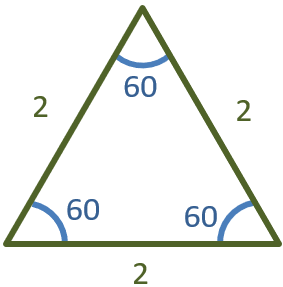
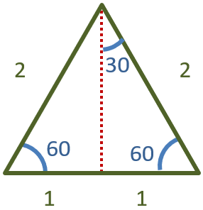
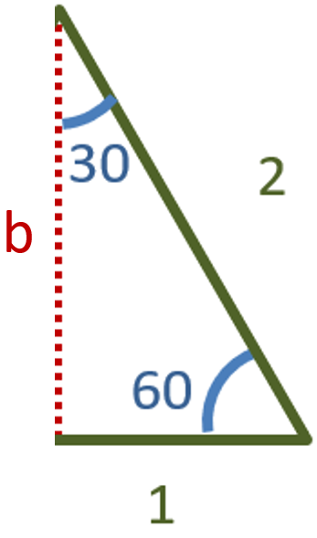
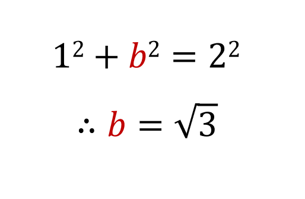

Here is an equilateral triangle with sides of length 2 units:
If we draw a line right in the middle, the base is cut into two:
We only need to be concerned about one half. Lets say that the red line is of length b:
Using the pythagorean theorem, we know that b is eqaul to √3:
This means that a triangle with angles in the ratio of 30:60:90, will have sides in the ratio of 1:√3:2.